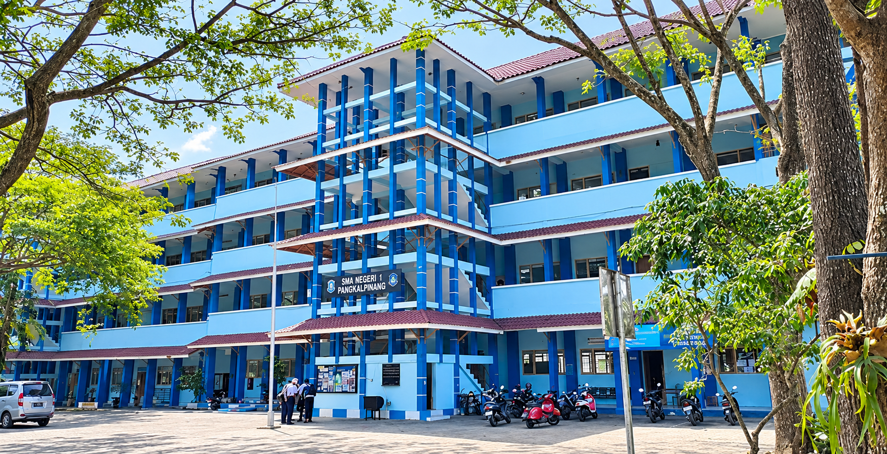

Copilot Search Branding Like Dislike SMK Brantas Karangkates didirikan pada 16 Juni 1995 berdasarkan SK Pendirian 1976/326/95 dan berada di bawah naungan Kementerian Pendidikan dan Kebudayaan. Sekolah ini berlokasi di Jl. Lolaras 14, Karangkates, Sumberpucung, Kabupaten Malang, dan telah berkembang menjadi SMK swasta berakreditasi A dengan fasilitas lengkap serta berbagai program keahlian.
